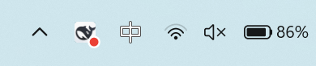
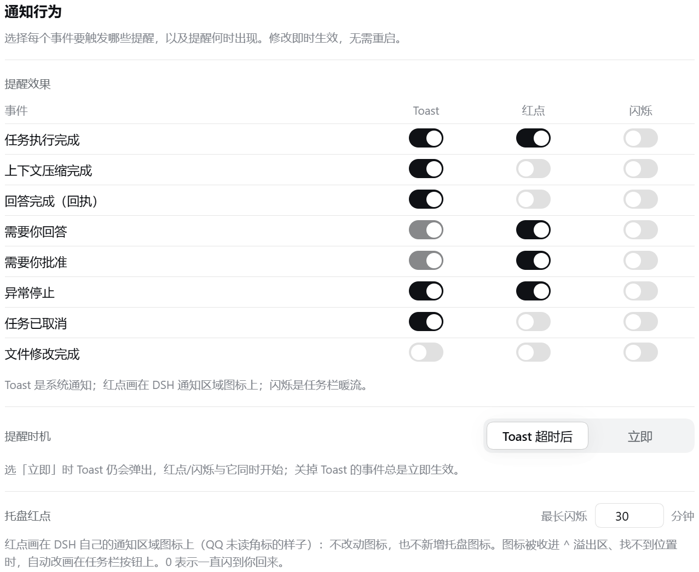

dsh-notify-win
DeepSeek Harness（DSH）Windows 通知插件：任务完成或需要你回答时弹出原生 toast，被忽略后在 DSH 自己的托盘图标上点亮 红色未读角标；每个事件都能单独配置 toast / 托盘红点 / 任务栏暖流。
✨ 功能
- 原生 Toast — 右下角系统通知，Win10/11 样式
- 托盘红点角标 — toast 被忽略后在 DSH 自己的通知区域图标上闪烁红色未读角标，回到 DSH 前台即停；不改图标、不新增托盘图标，图标收进 ^ 时自动改画到任务栏按钮
- 逐事件配置 — 在「插件 → dsh-notify-win」里为每个事件勾选 toast / 托盘红点 / 任务栏暖流，改动即时生效
- 任务完成触发 — 根 agent 进入 idle 时自动通知
- 需要回答触发 — 审批 / ask_user_question 时提醒
- 最小化也能回答 — DSH 窗口最小化、被全屏应用盖住或页面关掉时，问题由宿主在后台直接结算，toast 里选完立刻到达模型
- 零脚本 — 所有 toast、身份注册与点击聚焦由常驻 .NET helper 完成，需要 .NET 10 Desktop Runtime
- 零侵入 — 不注册服务、不经过模型审批
📸 截图

toast 被忽略后：红点在 DSH 自己的通知区域图标上闪，不新增托盘图标。

策略、提醒时机和红点时长都在「插件 → dsh-notify-win」页里，改完即时生效。
🚀 一行安装
dsh plugin --profile web add github:Andyqwe44/dsh-notify-win📦 安装详情
# 前置：.NET 10 Desktop Runtime（必需）
winget install Microsoft.DotNet.DesktopRuntime.10
# 前置：pnpm
corepack enable
# 安装
# 说明：npm 版本落后，暂用 GitHub 源
dsh plugin --profile web add github:Andyqwe44/dsh-notify-win
# 验证
dsh --profile web --dump-config
# 重启
dsh web